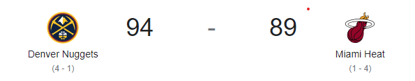

Nikkola

Nikola Jokic, jugador profesional de baloncesto serbio de 2,11 metros de estatura se desempeña en la posición de pívot. Desde su debut en la NBA en la campaña 15/16, Nikola Jokic ha sido nombrado en dos ocasiones como el MVP de la NBA (2021 y 2022) y este año, además de lograr su primer Anillo con los Nuggets, ha recibido el premio al MVP de las Finales.
Jokic, es el nuevo primer pívot en ganar el MVP de las Finales desde Shaquille O'Neal. Jokic, primer pívot en ganar el MVP de las Finales desde Shaquille O'Neal
Resultados Finales de PLAY-OFF
Nikola Jokic, jugador profesional de baloncesto serbio de 2,11 metros de estatura se desempeña en la posición de pívot. Desde su debut en la NBA en la campaña 15/16, Nikola Jokic ha sido nombrado en dos ocasiones como el MVP de la NBA (2021 y 2022) y este año, además de lograr su primer Anillo con los Nuggets, ha recibido el premio al MVP de las Finales.
Jokic, es el nuevo primer pívot en ganar el MVP de las Finales desde Shaquille O'Neal. Jokic, primer pívot en ganar el MVP de las Finales desde Shaquille O'Neal